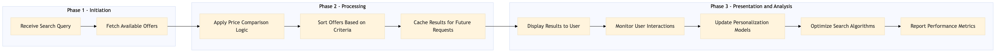

This process document outlines the management of price comparison and sort logic within the OTA Online Booking and Search domain, ensuring optimal user experience through personalized search results.
| Trigger | User initiates a search query on Expedia Open World or Partner Central. |
| Outcome | Users receive accurate, timely, and personalized search results based on their preferences and the current market conditions. |
| Systems | Expedia Open World Partner Central Amadeus NDC Sabre GDS Travelport EVC One Key TravelAds AWS SageMaker Snowflake Kafka Salesforce Tableau |

Click to enlarge
| Step | Name & Pain Point | Role | System | Input | Output | KPI | Flags |
|---|---|---|---|---|---|---|---|
| 1.1 | Receive Search Query Handling complex queries with multiple filters | Search Engine | Expedia Open World, Partner Central | User search parameters (destination, dates, travelers) | Parsed search query | Query parsing time < 100ms | ⚠ Exception |
| 1.2 | Fetch Available Offers Integrating with multiple GDS systems | Data Aggregator | Amadeus NDC, Sabre GDS, Travelport, EVC, One Key, TravelAds | Parsed search query | List of available offers with prices and attributes | Offer retrieval time < 500ms | ⚠ Exception |
| 1.3 | Apply Price Comparison Logic Handling currency conversion and dynamic pricing | Price Comparator | AWS SageMaker, Snowflake | List of available offers | Normalized prices and comparison results | Comparison accuracy > 95% | ⚠ Exception |
| 1.4 | Sort Offers Based on Criteria Personalizing sort order for diverse user profiles | Sorter | AWS SageMaker, Snowflake | Normalized prices and comparison results | Sorted list of offers based on user preferences | Sorting accuracy > 90% | ⚠ Exception |
| 1.5 | Cache Results for Future Requests Managing cache invalidation and consistency | Cacher | Snowflake, Kafka | Sorted list of offers | Cached search results with TTL | Cache hit rate > 80% | ⚠ Exception |
| 1.6 | Display Results to User Ensuring a seamless and intuitive user experience | UI/UX Designer | Expedia Open World, Partner Central | Cached search results | User interface displaying sorted offers | User satisfaction score > 85% | ⚠ Exception |
| 1.7 | Monitor User Interactions Capturing and analyzing user behavior | Analytics Engineer | Salesforce, Tableau | User interactions with search results | Interaction data for analysis | Click-through rate > 20% | ⚠ Exception |
| 1.8 | Update Personalization Models Continuous learning and adaptation of models | Machine Learning Engineer | AWS SageMaker, Snowflake | Interaction data | Updated personalization models | Model accuracy improvement > 5% | ⚠ Exception |
| 1.9 | Optimize Search Algorithms Balancing speed and accuracy in search results | Search Engineer | AWS SageMaker, Snowflake | Performance metrics and user feedback | Optimized search algorithms | Search response time < 300ms | ⚠ Exception |
| 1.10 | Report Performance Metrics Visualizing complex data for stakeholders | Data Analyst | Salesforce, Tableau | Performance metrics | Dashboard with KPIs and insights | Dashboard accuracy > 95% | ⚠ Exception |